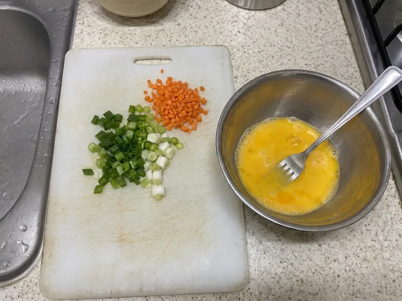
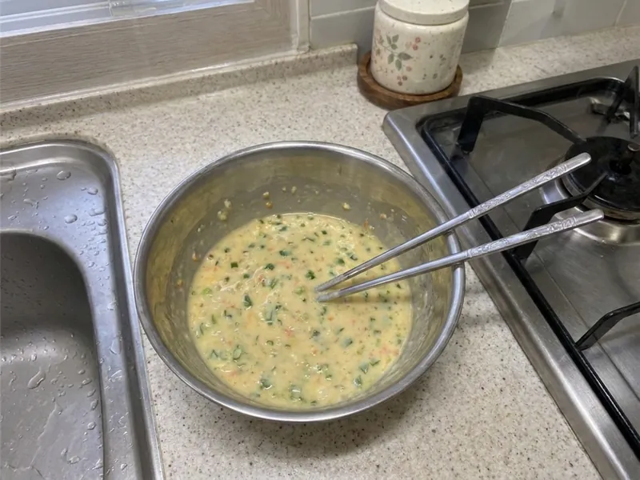
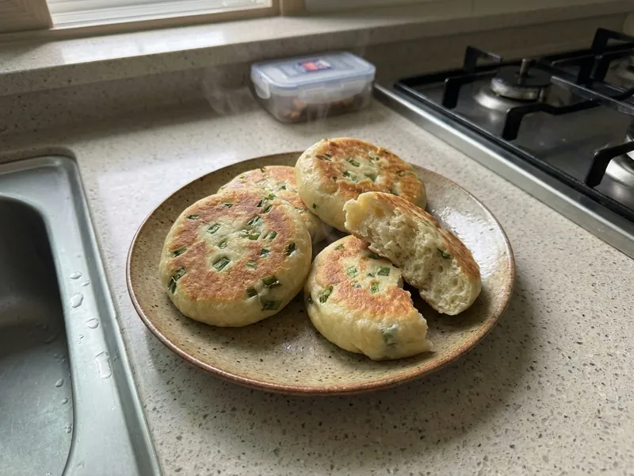

쿠팡 파트너스 활동의 일환으로 일정 수수료를 제공받습니다
5분 폭신 야채 계란빵
밀가루·설탕 0g, 아침 혈당 스파이크 걱정 끝!
편식 심한 아이도 앉은자리 4개 순삭 🍞
🛒 준비 재료 (동그란 빵 3~4개 분량)
🥚
달걀
2알 (실온에 두면 더 폭신해요)
🌱
쪽파 또는 대파
송송 반 줌 (약 2큰술)
🥕
다진 당근·양파
각 1큰술 (생략 가능)
🥛
우유 (또는 두유)
3큰술 (45ml)
🥄
진간장 (또는 소금)
큰술 1/4 (소금은 한 꼬집)
⭐
핵심재료
듬뿍 4큰술 (약 40g)
›
👩🍳 친절한 순서별 레시피
1
🌱 쪽파(또는 대파)와 당근은 아이가 식감 거부감 없이 먹도록
잘게 송송 썰어
준비하고, 스텐 볼에 달걀
2알
, 우유
3큰술
, 🥄 진간장
큰술 1/4
(감칠맛 비결!)을 넣어 포크로 거품이 살짝 나게 풀어주세요.

📸 송송 썬 대파·당근과 포크로 풀어준 달걀물
2
🥣 풀어둔 달걀물에 손질한 야채와
⭐ 핵심재료 ⭐
듬뿍 4큰술(약 40g)
을 넣고
젓가락으로 30초만 쓱쓱
섞어주세요. 밀가루 없이도 수분을 싹 머금어
걸쭉하고 찰기 있는 반죽
이 바로 만들어져요! (1분만 그대로 두면 훨씬 쫀득해져요)

📸 젓가락으로 쓱쓱 섞어 걸쭉해진 반죽 농도
3
🍳 프라이팬에 식용유나 버터를 살짝 코팅하듯 두르고
중약불
로 예열한 뒤, 반죽을 숟가락으로 동그랗게 떠 올려주세요.
뚜껑을 덮고 앞면 2분 30초, 뒤집어서 1분 30초
구워주면 속까지 카스테라처럼 폭신하게 부풀어 올라요.
4
✨ 겉은 노릇노릇 고소하고 속은 촉촉·폭신한
야채 계란빵 완성!
한 김 식혀 손으로 반 갈라주면 야채 골라내던 아이도 빵인 줄 알고 앉은자리에서 3~4개씩 순삭해요 🤍

📸 갓 구워 폭신하게 부풀어 오른 완성 계란빵
📌 실패 없는 엄마표 꿀팁
밀가루 대신
⭐ 핵심재료 ⭐
4큰술이 들어가 아침 공복 혈당 스파이크 걱정 없이
단백질·식이섬유·칼슘
을 한 번에 챙길 수 있어요
불이 세면 겉만 먼저 색이 나니 반드시
약불~중약불에서 뚜껑을 덮고
은근하게 익혀주세요
아이가 치즈를 좋아하면 반죽에
모짜렐라나 슬라이스 치즈 반 장
을 찢어 넣어보세요! 고소함이 2배예요 🧀
밀가루 0g인데 빵처럼 폭신한 비결,
⭐ 핵심재료 ⭐
4큰술이었어요 🍞
⭐ 핵심재료 바로 확인하기